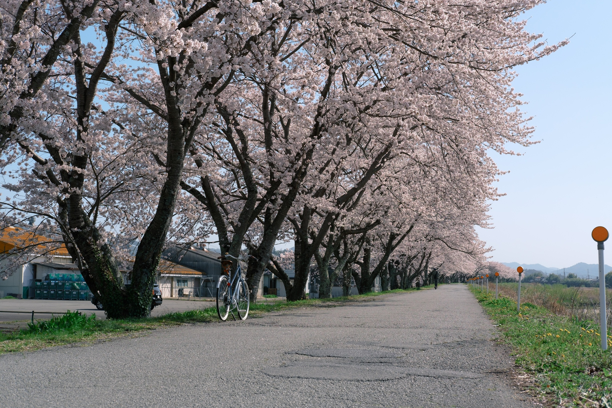
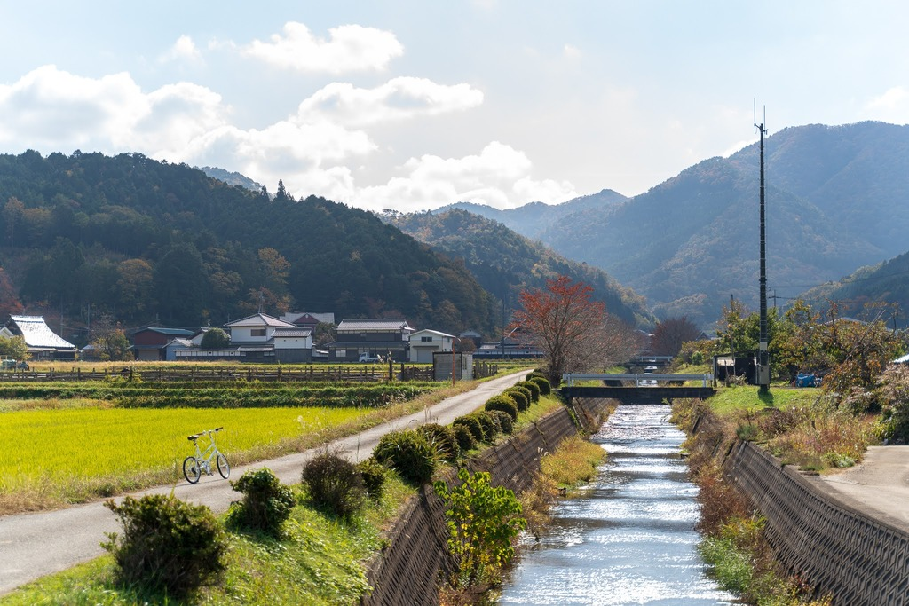

集合・レクチャー
E-BIKEの操作方法やコースの説明を行います。
篠山川沿いに約4kmにわたって続く「桜づつみ回廊」。約1000本のソメイヨシノが咲き誇るこの場所は、丹波篠山を代表する桜の名所です。
このツアーでは、E-BIKEを使って桜のトンネルを駆け抜けます。車では通り過ぎてしまうような景色も、自転車ならゆっくりと味わうことができます。人混みを避けたプライベートな時間をお楽しみください。

桜のトンネル
どこまでも続く桜並木の下をサイクリング。

里山の春
桜だけでなく、菜の花や新緑など、春の里山の風景を満喫。

プライベートガイド
お客様のペースに合わせて、写真撮影スポットなどもご案内します。
E-BIKEの操作方法やコースの説明を行います。
桜づつみ回廊へ向けて出発。春の風を感じながら走ります。
一番美しいポイントで記念撮影。お茶を飲みながらゆっくりと。
元の場所へ戻り、ツアー終了です。